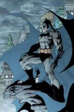
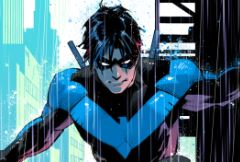
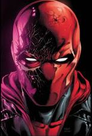

The Bat Family
Batman
Batman is usually protrayed as a cold-hearted, stoic person who only cares about his mission, especially in modern society. Though he is cold and stoic, he's not 'cold-hearten' as people think. It's shown in many comics, movies, and shows that he deeply cares about his family and has a soft spot for kids. It's show in mutliple comics that he keeps lolipops in his belt for whenever he has to deal with distressed kids; this occurred when he accidentally scared a child once.

NightWing
Though I don't know much of Nightwing as I do Batman. Nightwing is a very admirable hero or vigilante. Bruce even says once how he believes Nightwing isn't suppose to be more like Batman, but that Batman needs to be more like Nightwing. He's definitely one of the more rational members of the family, as well as Batman's first child.

Red Hood
Red Hood is a very complicated character as he was Batman's second child and one of Batman's greatest failures. He was the second Robin. I think he's such a tragic character as his death was the cause of the reader's, but technically by the Joker. I feel as though Batman's character was almost trashed in order for Red Hood's death to occur. I like him as his character is so complicated.
